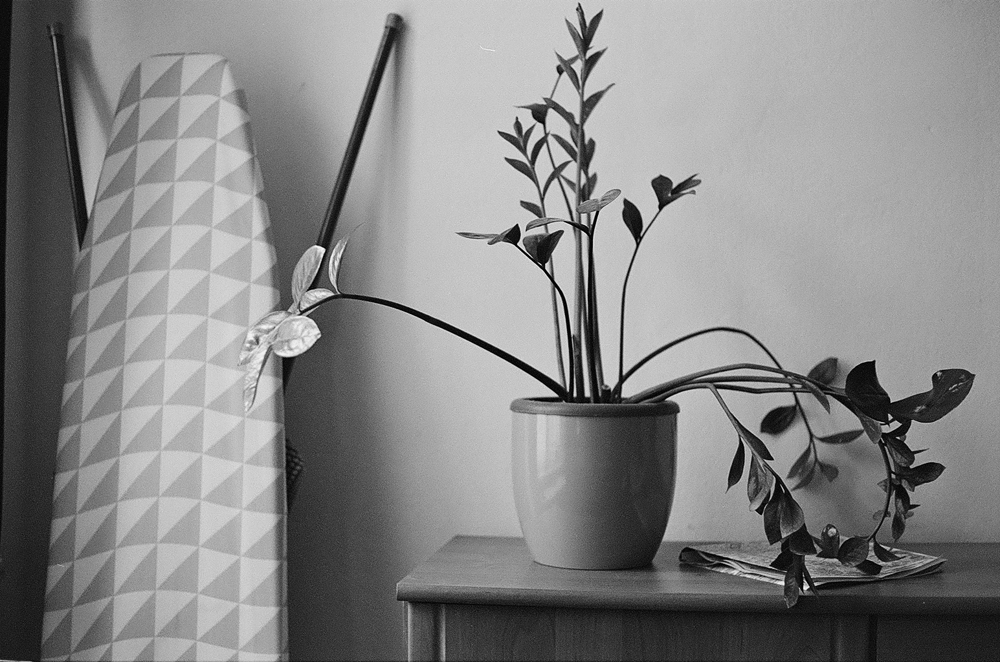
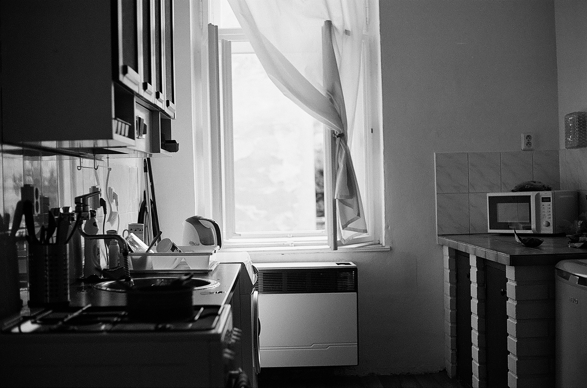
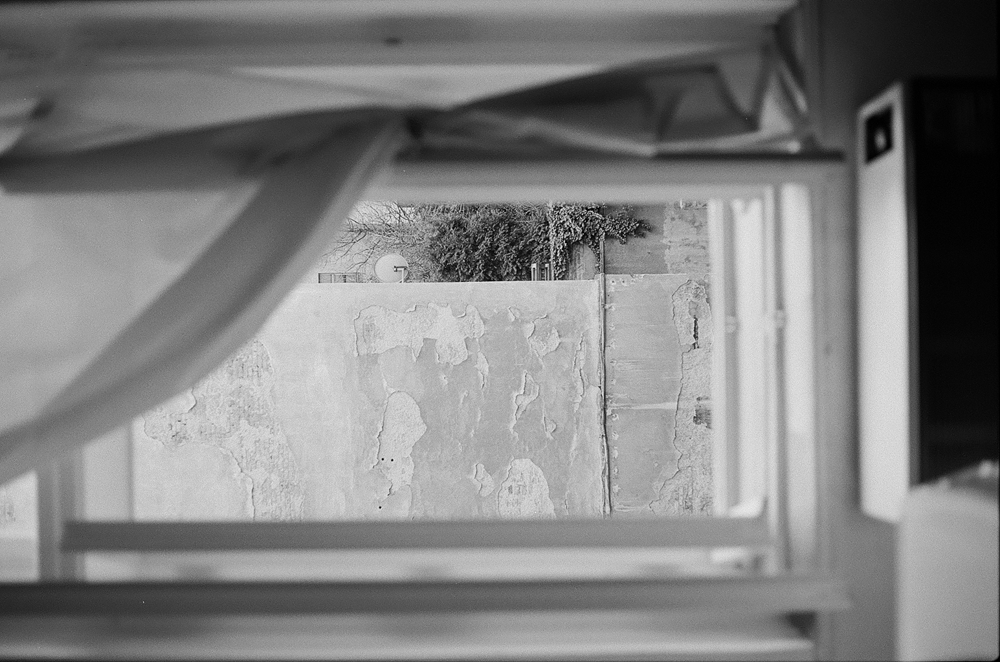
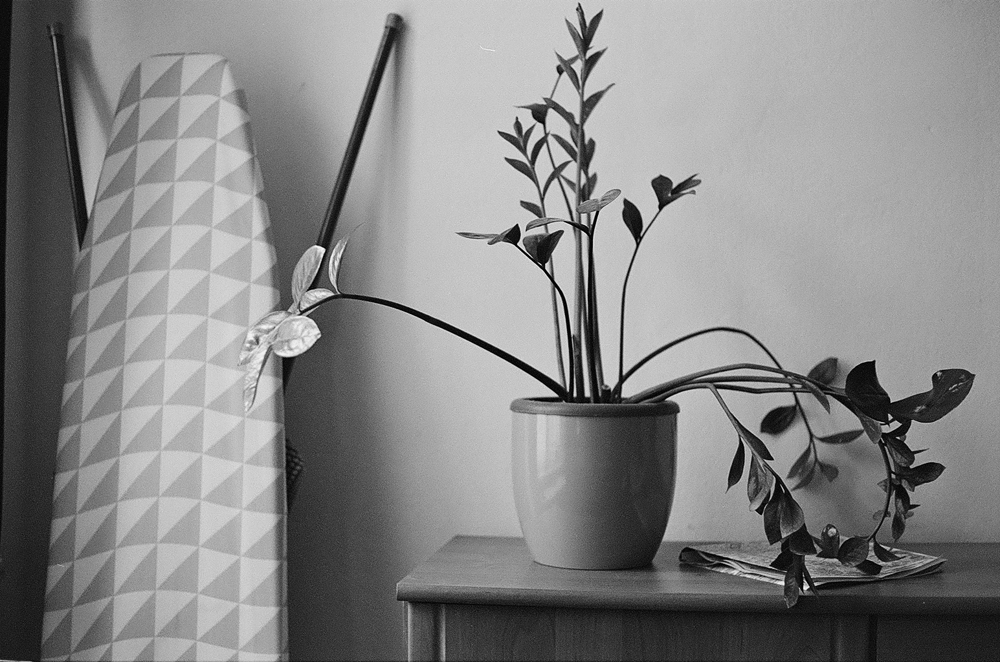
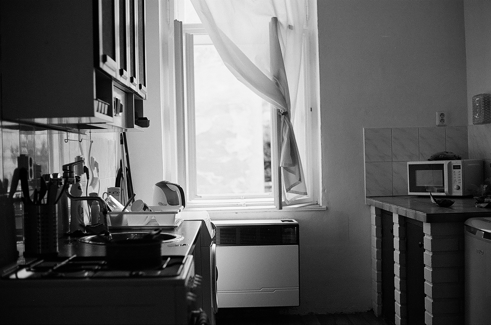
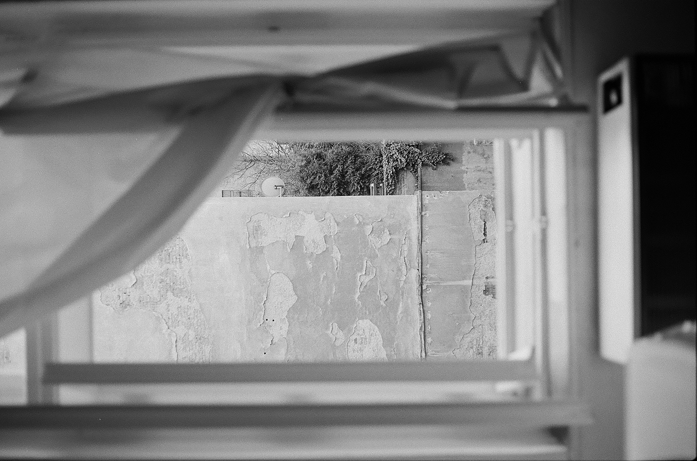
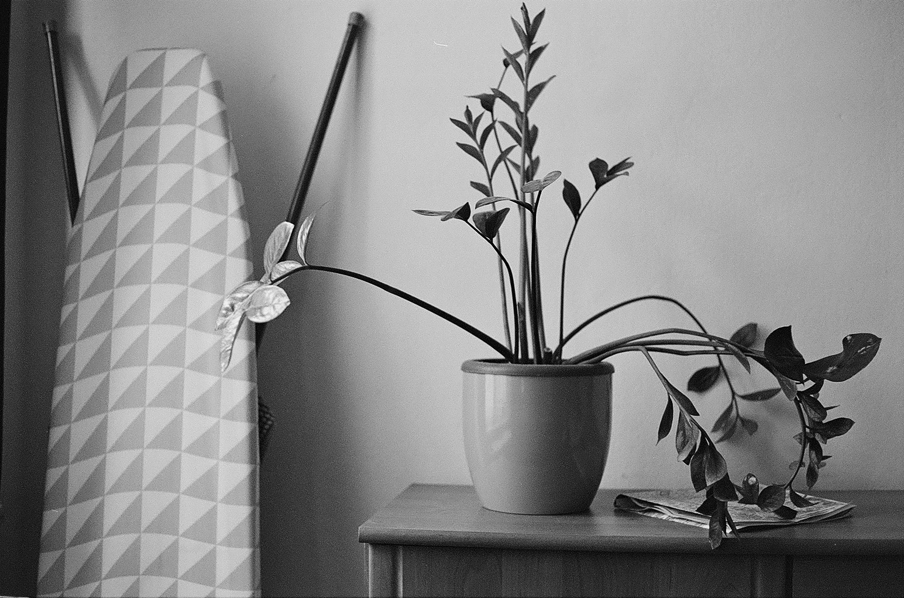
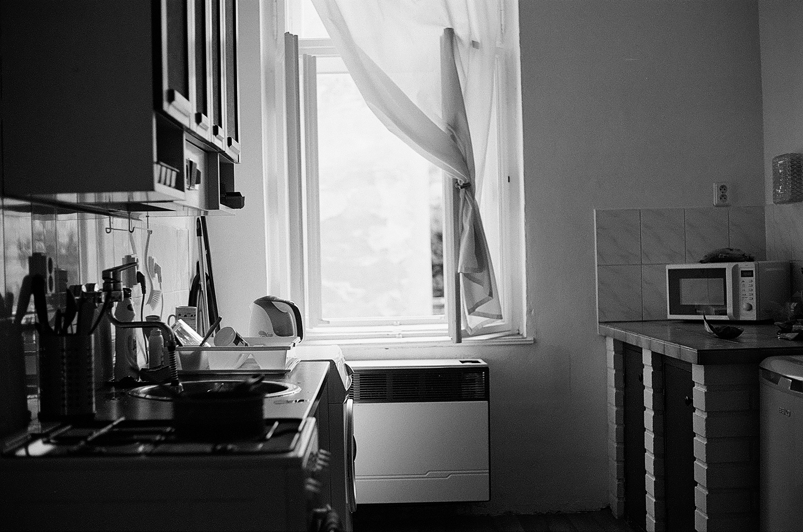
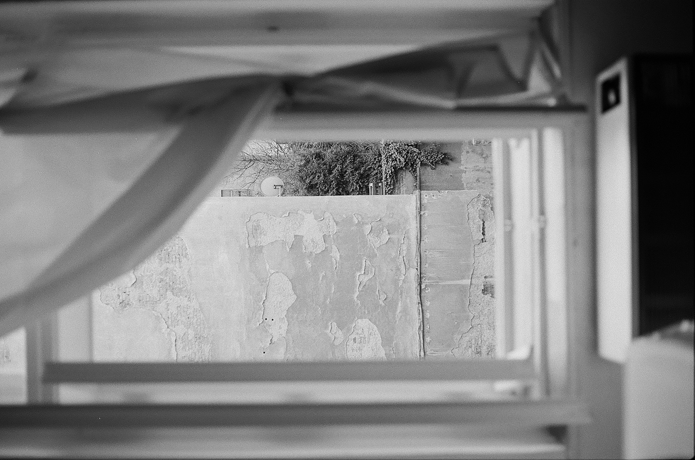

Lu is a photographer, shooting primarily in 35mm analogue format, though I am also interested in alternative photographic processing. What she aims to do in her photography is to present the world from new perspectives.
"Due to the restrictions that isolation brings to photography, I have found myself increasingly trying to view my surroundings in new ways, to make the mundanity of the objects that surround me feel more alive. "


